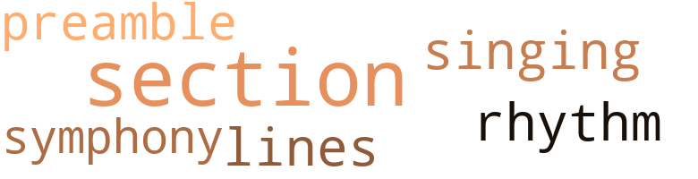
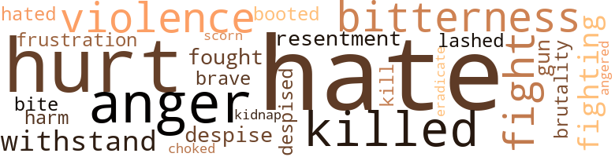
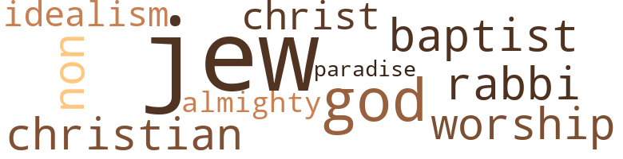

Counter- Clockwise, by Lee, John M. (1940)
8 music-related terms matched in this text.
Most frequent terms in this topic: section (3); singing (1); rhythm (1); lines (1); preamble (1)
preamble.n.01
Definition: a preliminary introduction to a statute or constitution (usually explaining its purpose)
| word | sentence |
|---|---|
| preamble | But instead , without any preamble , she told him , " We 're going to have a baby , Herbert , " Ignoring his startled exclamation , she went on , " Maybe we 'd better get marired right away and spare ourselves a lot of headaches , because no matter what you do , you 'll have to go through with it . |
rhythm.n.04
Definition: the arrangement of spoken words alternating stressed and unstressed elements
| word | sentence |
|---|---|
| rhythm | As she drove along , the rhythm of the motor kept singing , " You ca n't give this up - you ca n't give this up - you 're a fool - a fool . " |
section.n.01
Definition: a self-contained part of a larger composition (written or musical)
| word | sentence |
|---|---|
| section | Much of the disorder and slovenliness of the section had seeped into Kathe 's mind , leaving her a hopelessly floundered human wreck . |
| section | His natural inclination was to get out of the section as hurriedly as possible , but past experience had taught him to make haste slowly . |
| section | I 've been down in this section innumerable times , and I have seen many strange slum products , but she is far and away the most degraded scrap of wrecked humanity it has been my ill fortune to have met . |
singing.n.01
Definition: the act of singing vocal music
| word | sentence |
|---|---|
| singing | As she drove along , the rhythm of the motor kept singing , " You ca n't give this up - you ca n't give this up - you 're a fool - a fool . " |
symphony.n.01
Definition: a long and complex sonata for symphony orchestra
| word | sentence |
|---|---|
| symphony | The doctor had finished his ministrations , and the spasmodic sputtering of his automobile , which swelled into a symphony of explosive protestations as he drove away , left the winds and John Brender to bedevil the silence of the night . |
tune.n.01
Definition: a succession of notes forming a distinctive sequence
| word | sentence |
|---|---|
| lines | Quite evidently he had mastered his lines . |
55 violence-related terms matched in this text.
Most frequent terms in this topic: hate (9); anger (4); hurt (4); violence (3); bitterness (3)
anger.n.01
Definition: a strong emotion; a feeling that is oriented toward some real or supposed grievance
| word | sentence |
|---|---|
| anger | Herbert could always be depended upon to court her anger with his bigoted diatribes . |
| anger | Helen felt indignant anger surging within her . |
| anger | All she saw was amazement and anger . |
| anger | Hot anger surged within her . |
anger.v.02
Definition: become angry
| word | sentence |
|---|---|
| angered | It hurt and angered her . |
boot.v.01
Definition: kick; give a boot to
| word | sentence |
|---|---|
| booted | And you seem to have such an understanding sympathy for the downtrodden ; the poorly fed , ill-housed beggars , the booted and lashed victims of political and religious persecutions , and all that sort of baggage . |
contemn.v.01
Definition: look down on with disdain
| word | sentence |
|---|---|
| despise | You think I 'm some sort of that human waste you despise so much . |
| despised | They despised her because she aspired to improve upon her beginning . |
| scorn | Drown her foolish desires in a torrent of swift vituperation ; scorn her affectionate overtures ; laugh at her fears and crying . |
defy.v.01
Definition: resist or confront with resistance
| word | sentence |
|---|---|
| withstand | More than that , she knew that she would not have need of her room at Mrs. Sheridan 's again , nor would she have to withstand the prying curiosity of the girls at the store . |
| withstand | It becomes a question of how long we 'd be able to withstand the terrific strain of our widely divergent views - not very long , and you know it . |
eliminate.v.03
Definition: kill in large numbers
| word | sentence |
|---|---|
| eradicate | Her family and the unpleasant memories of her association with them faded gradually from her thoughts , but she could not eradicate the poison of her mother 's philosophy from her mind . |
ferociousness.n.01
Definition: the trait of extreme cruelty
| word | sentence |
|---|---|
| brutality | By the time Liom had begun to take form in her huge , shapeless body , Kathe had given up hoping for anything , and had resigned herself to another demonstration of Nature 's wilful brutality . |
fight.n.05
Definition: a boxing or wrestling match
| word | sentence |
|---|---|
| fight | All fight and protest had gone from Helen . |
| fight | Well , a couple of young hoodlums tried to ' roll ' him while he slept in the back room of that saloon down the street , and he put up a fight . |
| fight | About the same time , the saloonkeeper was calling up about a fight , and after we got his story , we knew this was the same guy . |
fight.v.02
Definition: fight against or resist strongly
| word | sentence |
|---|---|
| fought | Something in her eyes frightened him and he fought back an impulse to seize her as she thrust her hand in her bag that seemed to him to bulge in a most ominous manner . |
| fighting | Maybe because I am fighting against what I am-trying to be what I seem to be , and struggling against what I ought honestly to be - maybe that 's the difficulty . |
| fighting | Anyhow , I 'm tired of scheming and fighting things I ca n't see and understand . |
frustration.n.03
Definition: a feeling of annoyance at being hindered or criticized
| word | sentence |
|---|---|
| frustration | But I suppose Liom could see only the one as an end to the frustration she felt . |
gag.v.06
Definition: cause to retch or choke
| word | sentence |
|---|---|
| choked | The words were there , but something choked them back , held them in his throat , and sent the blood rushing to his face . |
gun.n.01
Definition: a weapon that discharges a missile at high velocity (especially from a metal tube or barrel)
| word | sentence |
|---|---|
| gun | You have , but of course since you did n't use a gun or anything like that , it will be easy for you to find an excuse . |
hate.n.01
Definition: the emotion of intense dislike; a feeling of dislike so strong that it demands action
| word | sentence |
|---|---|
| hate | So beautiful was she that her mother was wont to sit for long hours , staring at her with bewilderment and hate flashing from her large gray eyes . |
| hate | Almost three years had elapsed since the day she had bundled together her belongings and without a word had left , for ever , she hoped , the dismal hovel where her mother taught hate and futility . |
hate.v.01
Definition: dislike intensely; feel antipathy or aversion towards
| word | sentence |
|---|---|
| hate | People who hate you because you are beautiful cultivate you for the same reason ; it 's crazy , but it 's true - I know . |
| hate | Some day , I know , discovery is bound to come , and I 'm not quite sure that when it does I 'll mind being unmasked so much as I will hate to be forced into the level of society where I belong . |
| hate | You believe yourself superior to the Jew because you hate him . |
| hate | I hate Communism and greed and godlessness , but I ca n't find it within myself to hate those who are afflicted with these things ; because , whatever you or they may think , one divine hand molded us all out of common clay . " |
| hate | I hate Communism and greed and godlessness , but I ca n't find it within myself to hate those who are afflicted with these things ; because , whatever you or they may think , one divine hand molded us all out of common clay . " |
| hate | " You 're wrong when you attribute my attitude to hate and a feeling of superiority . |
| hated | Well , she hated them - because they were satisfied to live like pigs in the foulest corner of the town . |
| Hate | Hate it ! |
| Hate | Hate it ! |
| hate | You are big and broad in your thinking , you hate as much as I do the foolish social law that decreed our fate as lovers before we were born ; but you are no more willing to challenge that law than I am , because you know that we ca n't win ! " |
hurt.v.04
Definition: cause damage or affect negatively
| word | sentence |
|---|---|
| hurt | I want to be hurt . |
| hurt | I deserve to be hurt . " |
injury.n.01
Definition: any physical damage to the body caused by violence or accident or fracture etc.
| word | sentence |
|---|---|
| harm | She wanted to tell him that she was a part of the scene which he had just witnessed ; that she was as vile as they ; and that he had been unmindful of the harm in her fertility when he embraced her . |
kidnap.v.01
Definition: take away to an undisclosed location against their will and usually in order to extract a ransom
| word | sentence |
|---|---|
| kidnap | She has been calling me - telling me to do everything but kidnap you to get you back . " |
kill.v.10
Definition: cause the death of, without intention
| word | sentence |
|---|---|
| killed | I had n't thought about it much until the other day , and I have n't had time enough to figure it all out , but I 've never killed anything that was human or a part of a human soul . |
| kill | When you slept it haunted your dreams ; it walked beside you to kill off hope , and it left you weak and sore in spirit . |
| killed | Some day he 'll get killed . |
| killed | A moment ago , I would have killed you because you were so cruel and so right . |
pain.v.02
Definition: cause emotional anguish or make miserable
| word | sentence |
|---|---|
| hurt | It hurt and angered her . |
| Hurt | Hurt me ! |
| hurt | It is my earnest hope that you will not distress yourself by attempting to hurt me through court action . |
resentment.n.01
Definition: a feeling of deep and bitter anger and ill-will
| word | sentence |
|---|---|
| resentment | Helen could think of no expression for the resentment she felt . |
| bitterness | Everything that occurred to do was too tinged with bitterness to be workable , or too far beyond her power to accomplish . |
| bitterness | He had stung her with the bitterness of his words . |
| bitterness | Show her that you , Kathe , are the pattern of her existence ; nurture her on the bitterness that runs cold through your aching veins . |
sting.n.03
Definition: a painful wound caused by the thrust of an insect's stinger into skin
| word | sentence |
|---|---|
| bite | It will only require a few minutes and then we can stop off somewhere for a bite to eat . |
violence.n.01
Definition: an act of aggression (as one against a person who resists)
| word | sentence |
|---|---|
| violence | You believe that you , and anyone who believes as you do , are right in persecuting them with outrageous violence , and what 's worse , with misleading and vitriolic misstatements like those you have just made . |
| violence | Kathe , she believed , would some day climax her brooding with violence . |
| violence | The violence with which she slammed the door drowned out his desperate , " Wait a minute ! " |
weather.v.01
Definition: face and withstand with courage
| word | sentence |
|---|---|
| brave | Centuries passed before her in review , and she awoke at the soft call of a brave knight - only it was n't a knight at all , but Sherman , and he was smiling at her . |
whip.v.04
Definition: strike as if by whipping
| word | sentence |
|---|---|
| lashed | And you seem to have such an understanding sympathy for the downtrodden ; the poorly fed , ill-housed beggars , the booted and lashed victims of political and religious persecutions , and all that sort of baggage . |
21 religion-related terms matched in this text.
Most frequent terms in this topic: Jew (6); Jews (4); God (2); worship (1); Christ (1)
baptist.n.01
Definition: follower of Baptistic doctrines
| word | sentence |
|---|---|
| Baptist | She had not made a pretty bride the day John had marched her to the Baptist Mission over on Water Street to " take out papers . " |
christian.n.01
Definition: a religious person who believes Jesus is the Christ and who is a member of a Christian denomination
| word | sentence |
|---|---|
| Christian | It would be a laughing matter if it were n't for the Jewish industrialists and bankers who utilise their all but pilfered profits to finance it ; they put their rotten money into any scheme that has for its purpose the destruction of Christian and democratic institutions . |
eden.n.01
Definition: any place of complete bliss and delight and peace
| word | sentence |
|---|---|
| paradise | At first , all else forgotten , they had lived in a paradise unlike that of other lovers , for they had added to theirs the delicious romance of something stolen and forbidden . |
gentile.n.03
Definition: a Christian as contrasted with a Jew
| word | sentence |
|---|---|
| non-jews | They foment trouble in the ranks of the laboring people , who are really well off , and they 're so darn clannish that they rarely spend any money , the best part of which they get from non-jews , on anyone who is n't one of them . " |
god.n.03
Definition: a man of such superior qualities that he seems like a deity to other people
| word | sentence |
|---|---|
| God | Certainly I agree that God created us all , but some of us are less able than others to think straight and act for our own and the common good . |
| God | They were denied the right to worship God accord ing to the dictates of their own consciences people of sturdy character and steadfast in their purpose , they met clandestinely . |
godhead.n.01
Definition: terms referring to the Judeo-Christian God
| word | sentence |
|---|---|
| Almighty | You had to accept it as the Almighty accepts the frayed souls of a dying world . |
idealism.n.01
Definition: (philosophy) the philosophical theory that ideas are the only reality
| word | sentence |
|---|---|
| idealism | She felt that he was permitting himself to be blinded by an idealism , laudable enough , but much too delicate and fragile for cold practical handling in a world of pomp and pride . |
jew.n.01
Definition: a person belonging to the worldwide group claiming descent from Jacob (or converted to it) and connected by cultural or religious ties
| word | sentence |
|---|---|
| Jew | " YOU know , I used to think you were a Jew , " he told her , sheepishly . |
| Jew | So he was afraid she might be a Jew ! |
| Jew | " Had I been a Jew , of course , you would have avoided me . " |
| Jew | " I gather that being a Jew is anathema , so far as you 're concerned at least . " |
| Jews | " Are n't there any Jews among the thinking people of this country - as you put it ? " |
| Jew | " What 's the essential difference between a Jew and other humans - you and me and other people who are not Jews ? |
| Jews | " What 's the essential difference between a Jew and other humans - you and me and other people who are not Jews ? |
| Jew | You believe yourself superior to the Jew because you hate him . |
| Jews | I 've several friends who are Jews , and some of them have been in my home . |
| Jews | A few of them are Communists , due to the influence of the Jews , but they are too poor and disorganized to count for anything . |
messiah.n.01
Definition: any expected deliverer
| word | sentence |
|---|---|
| Christ | You had to endure it as Christ endured the cross . |
rabbi.n.01
Definition: spiritual leader of a Jewish congregation; qualified to expound and apply Jewish law
| word | sentence |
|---|---|
| Rabbi | He must be a Rabbi or something ! " |
worship.n.01
Definition: the activity of worshipping
| word | sentence |
|---|---|
| worship | They were denied the right to worship God accord ing to the dictates of their own consciences people of sturdy character and steadfast in their purpose , they met clandestinely . |